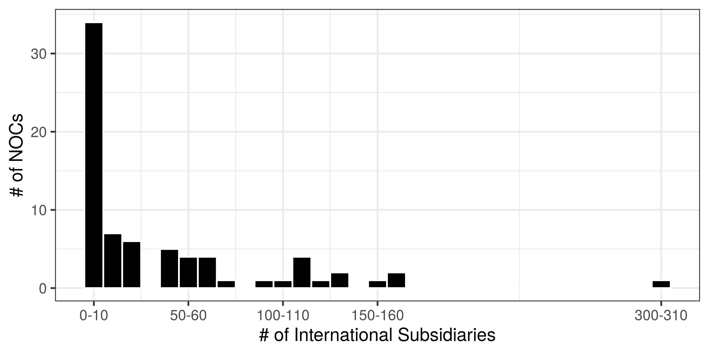
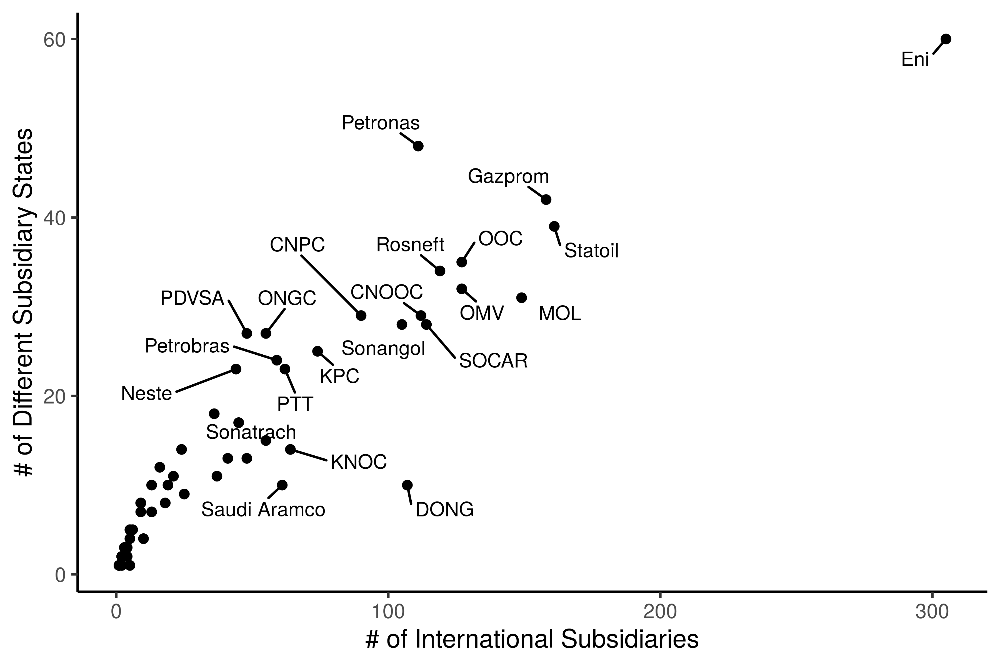
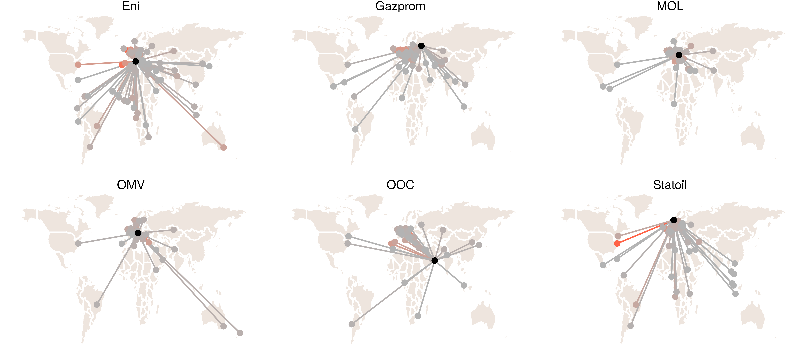
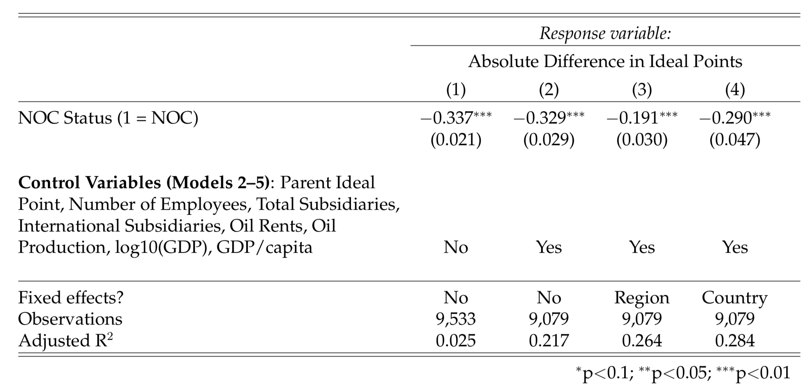

This section proceeds down three primary paths. First, we describe basic features of how internationalization varies across NOCs (and IOCs). While methodologically unsophisticated, our objective is important: NOC internationalization has received relatively little empirical attention to date, and we lack satisfactory answers to a number of basic questions. Descriptive analysis of this sort is an essential baseline for more sophisticated inferential/theoretical work. Section 1.4.1 addresses the following questions:
In section 1.4.2, we analyze the relationships between firms and subsidiaries to shed light on how NOC internationalization varies as a network. Come back to this and build it out.
In 1.4.3, we investigate whether the pattern of NOC internationalization differs measurably from how IOCs are structured as multinational firms. In particular, we examine the political affinity between home and host states. Are NOCs more likely to invest in states that are more politically alike? Come back to this and build it out.
Of the 87 NOCs identified, we were able to collect corporate hierarchy data on 77 distinct firms across 64 countries. 60 of these firms have at least one international subsidiary. NOCs have a median number of 18 international subsidiaries, compared to a median of 27 in the sample of IOCs captured. Summary statistics can me found in Table 1.1.
Of the 87 NOCs identified, we were able to collect corporate hierarchy data on 77 distinct firms across 64 countries. 60 of these firms have at least one international subsidiary. NOCs have a median number of 18 international subsidiaries, compared to a median of 27 in the sample of IOCs captured. Summary statistics can me found in Table 1.1.
subsidiaries %>%
# filter(Status == "international") %>%
filter(Type == "NOC") %>%
group_by(shortname, Type, Status) %>%
summarize(n = n()) %>%
group_by(Status) %>%
summarize(Mean = round(mean(n, na.rm = T),1),
Median = round(median(n, na.rm = T),1),
`Std. Dev` = round(sd(n, na.rm = T),1),
Min = min(n, na.rm = T),
Max = max(n, na.rm = T),
Total = sum(n, na.rm = T)) %>%
rename(Type = Status) %>%
na.omit() %>%
knitr::kable(caption = "Summary Statistics: NOC Subsidiaries",
booktabs = T) %>%
kableExtra::row_spec(0, bold = T) Table 1.1: Summary Statistics: NOC Subsidiaries
| Type | Mean | Median | Std. Dev | Min | Max | Total |
|---|---|---|---|---|---|---|
| domestic | 58.9 | 18.5 | 106.6 | 1 | 554 | 4125 |
| international | 47.5 | 22.5 | 58.2 | 1 | 305 | 2754 |
Figure 1.2 below visualizes the distribution of NOCs and IOCs by the number of international subsidiaries they have. The untransformed distribution is strongly right-skewed, and so the axis has been log10 transformed to better visualize the variation in the data. An alternative view utilizing boxplots can be found in the appendix (Figure ??).
subsidiaries %>%
filter(Type == "NOC") %>%
count(shortname, Status) %>%
filter(Status %in% c("domestic", "international")) %>%
spread(Status, n) %>%
mutate(international = ifelse(is.na(international), 0, international)) %>%
ggplot(aes(international)) +
geom_histogram(binwidth = 10, color = "white", fill = "black") +
scale_x_continuous(breaks=c(0,50,100,150,300),
labels = c("0-10","50-60", "100-110", "150-160", "300-310")) +
labs(x = "# of International Subsidiaries",
y = "# of NOCs") +
theme_bw() Figure 1.2: Distribution of International Subsidiaries
European NOCs generally have the most international subsidiaries. Eni has 305, spread across 54 different host states. Equinor (formerly Statoil - Norway, 161 international subsidiaries), MOL (Hungary, 143), Gazprom (Russia, 130), and OOC (Oman, 125) round out the top five. Of these, only Gazprom and OOC are majority state-owned.13 In each of the other firms, the state maintains a substantial minority stake in the firm and is the largest stakeholder. A list of the top 20 NOCs by international subsidiaries can be found in 1.2.
subsidiaries %>%
filter(Type == "NOC") %>%
select(shortname, country, subsidiary_country, Status) %>%
group_by(shortname, country, Status) %>%
summarize(n = n()) %>%
filter(grepl("domestic|international", Status)) %>%
spread(Status, n) %>%
mutate(international = ifelse(is.na(international), 0, international)) %>%
mutate(domestic = ifelse(is.na(domestic), 1, domestic)) %>%
arrange(-international) %>%
ungroup() %>%
dplyr::slice(1:20) %>%
rename(Firm = shortname,
State = country,
`International` = international,
`Domestic` = domestic) %>%
knitr::kable(caption = "Internationalized NOCs",
booktabs = T) %>%
kableExtra::kable_styling() %>%
kableExtra::add_header_above(c(" " = 2, "Subsidiary Type" = 2)) %>%
kableExtra::row_spec(0, bold = T) %>%
kableExtra::row_spec(1, bold = T)Table 1.2: Internationalized NOCs
| Firm | State | Domestic | International |
|---|---|---|---|
| Eni | Italy | 93 | 305 |
| Statoil | Norway | 128 | 161 |
| Gazprom | Russia | 484 | 158 |
| MOL | Hungary | 73 | 149 |
| OMV | Austria | 36 | 127 |
| OOC | Oman | 19 | 127 |
| Rosneft | Russia | 554 | 119 |
| SOCAR | Azerbaijan | 19 | 114 |
| CNOOC | China | 328 | 112 |
| Petronas | Malaysia (1966-) | 190 | 111 |
| DONG | Denmark | 59 | 107 |
| Sonangol | Angola | 36 | 105 |
| CNPC | China | 341 | 90 |
| KPC | Kuwait | 13 | 74 |
| KNOC | Korea, South | 7 | 64 |
| PTT | Thailand | 122 | 62 |
| Saudi Aramco | Saudi Arabia | 23 | 61 |
| Petrobras | Brazil | 122 | 59 |
| ONGC | India | 46 | 55 |
| Sonatrach | Algeria | 22 | 55 |
At the other end of the distribution, there are at least 17 NOCs that do not have any recorded international subsidiaries in the dataset, and another 5 that have only one. CUPET, Cuba’s NOC, has one identified international subsidiary: a minority investment in Angola’s Cabinda Onshore South Block oil concession. Uzbekneftegaz, Uzbekistan’s NOC, has two: gas utility subsidiaries in China and South Korea.
There are 2,638 international subsidiaries spread across the 60 NOCs that have at least one international subsidiary. 66% of these subsidiaries are majority owned by the NOC parent (24% are minority-owned, and 10% of subsidiaries do not have ownership amount available). They are spread across a number of different industries, the most common being exploration & production, refining & marketing, and storage & transportation, though we are lacking data on a significant percentage of subsidiaries.
The relationship between an investing firm and the state its subsidiary is registered in should be treated with significant care. An Eni example illustrates this effectively. Eni has 44 subsidiaries in the United Kingdom; one of these is Burren Energy PLC. Burren was a British firm prior to its acquisition by Eni, but at the time of acquisition it had active or former concerns in Yemen, Oman, Egypt, Turkmenistan, India, and Congo. When a subsidiary is itself a multinational corporation, this can have substantial confounding effects on our ability to appropriately assess the kind of internationalization pursued by the parent firm.14 Another challenge is that some host states — the United Kindgom and the Netherlands chief among them — have sub-jurisdictions that are magnets for offshore investments or tax avoidance. These include Jersey, and the Cayman Islands, for example. NOCs (and IOCs) have many subsidiaries in these types of jurisdictions, indicating that tax havens play an important role in the structure of the global market for hydrocarbons. With these caveats in mind, however,it is worth understanding how NOC networks vary.
In general, firms with more international subsidiaries have them in a broader range of locations (Figure 1.3). Equinor (formerly Statoil, the Norwegian NOC) has 161 international subsidiaries spread across 39 different countries, with a median of 2 subsidiaries per country. Petronas, the Malaysian NOC, has fewer international subsidiaries (111) but spread across a larger number of countries (46).
Figure 1.3) is a highly informative representation of how internationalization varies across NOCs. There are only a few firms that have both a large and broad-based international presence: Eni is the runaway outlier in both respects, but this group also include Equinor (Statoil), Petronas, Gazprom, Rosneft, the Oman Oil Company (OOC), OMV, MOL, SOCAR, Sonangol, and CNPC. Many of these are NOCs with strong commercial institutional characteristics (a minority of shares floated on the stock market, for instance). DONG and Petronas are both outliers of sorts. DONG has a large number of international subsidiaries but more than half of them are in one subsidiary state, Germany. Petronas has fewer international subsidiaries than many of these other internationalized NOCs, but has them spread across more subsidiary states than any other firm save Eni.
nocdata::subsidiaries %>%
filter(Status == "international" & Type == "NOC") %>%
count(shortname, subsidiary_country, Type, sort = T) %>%
group_by(shortname, Type) %>%
mutate(total = sum(n),
n_countries = n()) %>%
summarize(international_subsidiaries = max(total),
different_countries = max(n_countries),
median_subsidiary_per_country = median(n)) %>%
arrange(-international_subsidiaries) %>%
mutate(tag = case_when(international_subsidiaries > 50 |
different_countries > 20 ~ "tag",
TRUE ~ "notag")) %>%
ggplot(aes(international_subsidiaries, different_countries,
group = Type,
label = shortname)) +
geom_point() +
ggrepel::geom_text_repel(data = . %>%
mutate(label = ifelse(tag == "tag", shortname, "")),
aes(label = label),
size = 3,
box.padding = .5,
show.legend = FALSE) +
labs(x = "# of International Subsidiaries",
y = "# of Different Subsidiary States") +
theme_classic() +
theme(legend.position="none",
legend.title = element_blank())Figure 1.3: NOC Internationalization: Total number of International Subsidiaries (x) correlates strongly with breadth of the international subsidiary network (y). Points sized by median number of subsidiaries per location.
One of the best ways to visualize this variation is using maps. Figure ?? visualizes the subsidiary network for the NOCs with the most international subsidiaries by drawing a line between the home state and the subsidiary state (endpoints for both are the state capital, as subsidiary specific headquarters data is difficult to geocode with reliability).
subsidiaries %>%
filter(Status == "international" & Type == "NOC") %>%
select(shortname, country, subsidiary_country,
lat, lon, lat.y, lon.y) %>%
group_by(shortname, subsidiary_country) %>%
summarize(n_subs = n(),
lat = max(lat),
lon = max(lon),
lat.y = max(lat.y),
lon.y = max(lon.y)) %>%
arrange(-n_subs) %>%
group_by(shortname) %>%
mutate(tot_n = sum(n_subs)) %>%
filter(shortname %in% c("Statoil", "Eni", "MOL","OMV", "Gazprom", "OOC")) %>%
na.omit() %>%
ggplot() +
borders("world", colour = "white", fill = "seashell2") +
theme_void() +
coord_cartesian(ylim = c(-50, 80)) +
geom_curve(aes(x = lon, y = lat,
xend = lon.y, yend = lat.y,
color = n_subs),
curvature = .0) +
geom_point(aes(lon.y, lat.y, color = n_subs)) +
geom_point(aes(lon, lat)) +
facet_wrap(~shortname) +
scale_color_continuous(low = "grey70", high = "tomato") +
theme(legend.position="none",
legend.title = element_blank())
These visuals reveal several interesting patterns that might not otherwise be apparent without showing the spatial data on a map. Statoil and Eni have the broadest (and largest) international networks, but they differ substantially from one another: Eni is more heavily invested in Africa and East Asia than Statoil. Gazprom, MOL and OMV concentrate their investments within a relatively narrow geographical scope: none have developed a presence in East Asia, and OMV is the only one with subsidiaries in South America.
An alternative way to think about internationalization isn’t the absolute degree of internationalization achieved by a given firm, but rather whether that firm over- (or under-) indexes on internationalization given what we know about it. Which firms “punch above their weight” from an internationalization persepective? Using the subsidiary networks dataset, one way to do this might be to index international subsidiaries to domestic subsidiaries. In general larger, more capable or more well-endowed firms should have both a substantial international presence and a network of subsidiaries domestically to handle (the correlation between the two is moderately positive, at 0.47 [0.27, 0.63]).
The table above lists the firms that strongly over-index in internationalization: they have at least three times as many international subsidiaries as domestic ones. This approach brings some new firms to prominence. KNOC, South Korea’s firm, was not previously identified as a highly internationalized firm, but its international network relative to the scale of its domestic operations is dramatic. Finland and Saudi Arabia are similar. There are also, however, a number of firms that should be classed as highly internationalized by both approaches, absolute size of the international network and relative to the domestic network: OOC, SOCAR, KPC, Sonangol, OMV, ENI.
Is NOC internationalization measurably different from the international networks developed by non-state owned international oil companies? As discussed above, there is a clear difference in degree or size: the top IOCs generally have much larger and more extensive international networks than NOCs. Does that difference persist when we consider the kind of network NOCs develop? This section considers whether NOC and IOC investment networks different in terms of the political affinity between home and host state. Political affinity in the subsidiary network is one of the most interesting potential points of departure between IOCs and NOCs. On one hand, if there is no measurable difference in the networks, then our case for focusing research into NOCs as a distinct set of firms is undermined.
I operationalize this question in the following way. First, I re-frame it in terms of a testable hypothesis. If NOCs do invest politically, then there will likely be a systematic difference between how they invest and how peer IOCs invest. This difference will relate to the degree to which the pattern of investments reflects state preferences. If NOCs invest politically, the pattern of their investments should reflect the political preferences of the state such that NOC patterns are systematically different from IOC investment patterns.
To measure that difference, I consider the state ideal point proximity between parent and subsidiary firms for all international parent-subsidiary relationships for both NOCs and IOCs. High proximity is reflected in a small absolute difference between ideal points: parent and subsidiary states are quite similar in terms of their political preferences via-a-vis the US led international order. Alternatively, low proximity (reflected in a large absolute difference) indicates that the two states have very different perspectives and preferences.
The hypothesis I investigate is that NOCs are indeed a different type of firm, one that behaves differently when it comes to their international expansion. I hypothesize that this underlying difference will be expressed in the pattern of investments they make and subsidiaries they establish, particularly in terms of the relative political characteristics of the relationship.
I investigate this by regressing the absolute difference between parent and subsidiary stage ideal points on a dichotomous term indicating whether or not the parent is an NOC, the ideal point of the parent state, and a vector of other covariates to control for observable differences between NOCs and IOCs. The coefficient on the NOC/IOC dichotomous term captures the difference between groups.
The results of this analysis allow me to reject the null hypothesis that there is no systematic difference between NOCs and IOCs in terms of the political proximity of their subsidiaries. Controlling for observable differences, NOC subsidiaries are likely to be between .2 and .3 ideal points closer to their parent than IOC subsidiaries. This result is consistent across several specifications, including models with both region and country fixed effects.
The outcome variable I employ is the absolute difference between parent and subsidiary state ideal points based on United Nations (UN) General Assembly votes. These data are a combination of Capital IQ subsidiary data and UN voting ideal point data (Bailey, Strezhnev, and Voeten 2017Bailey, Michael A., Anton Strezhnev, and Erik Voeten. 2017. “Estimating Dynamic State Preferences from United Nations Voting Data.” Journal of Conflict Resolution 61 (2): 430–56. https://doi.org/10.1177/0022002715595700.). As discussed earlier, subsidiaries are coded both for their headquarter location and the headquarter location for their parent firm. My subsidiary dataset is comprised of 10,471 subsidiaries; 2,746 of these are subsidiaries of NOCs. All of these are international subsidiaries: the headquarters of the parent and the subsidiary are in different states.
State ideal points capture “state preference over foreign policy… on a single dimension that reflects state positions toward the US-led liberal order” (Bailey, Strezhnev, and Voeten 2017Bailey, Michael A., Anton Strezhnev, and Erik Voeten. 2017. “Estimating Dynamic State Preferences from United Nations Voting Data.” Journal of Conflict Resolution 61 (2): 430–56. https://doi.org/10.1177/0022002715595700., 430).15 I refrain from developing a more detailed discussion of these data here, given the purpose of the document and the reader’s intimate familiarity with them. Ideal points don’t directly reveal or capture how similar states are in terms of their foreign policy preferences, but rather how comparable they are on a common scale, in terms of a common position vis-a-via the US-led international order. I refer to this comparability as political affinity.
I merge in state ideal points for both parent and subsidiary; the absolute difference between these values provides a subsidiary-level measure of the ideal point proximity — and thus, the political affinity — between the subsidiary state and the parent state. Absolute differences range from 0 to 4.4, with a mean of 1.3 and a standard deviation of 0.9. The treatment of interest is a dichotomous indicator that takes 0 if the parent is an IOC and 1 if the parent is a NOC.
In order to operationalize H1, I regress the absolute difference on a dichotomous indicator for whether or not the parent is an NOC and a vector of covariates that account for observable differences between NOCs and IOCs. The term on the NOC/IOC indicator can be interpreted as the impact of being an NOC relative to an IOC on absolute differences, conditional on covariates.
Prior to conducting regression analysis, I probed the plausibility of this difference visually and using a difference in means test. Visualization of the distribution of ideal point absolute differences for both NOCs and IOCs offer some preliminary support for contention that there is a difference between groups. While both distributions are left-censored with a long right tail, NOCs display more relative density at the lower end of the absolute difference range than IOCS. A difference-in-means t-test confirms that there is s statistically significant difference between mean absolute difference values for NOCs when compared to IOCs. In general, these results suggest that NOCs tend to set up subsidiaries such that the aggregate absolute difference between parent and subsidiary ideal points is less than IOCs. In other words, political affinity between parent and subsidiaries is higher, on average, in the NOC data than in the IOC data.
I control for parent state ideal point to capture the intuition that absolute difference might be primarily driven by the relative difference in NOC and IOC parent ideal points. Perhaps parent-subsidiary ideal point absolute difference is purely a function of the fact that NOC parents generally have lower ideal points than IOC parents, as do subsidiaries. The inclusion of this covariate should allay some of these concerns.
I also control for observable differences between IOCs and NOCs related to oil production, oil exports, oil rents as a share of government revenue, gross domestic product, and GDP per capita. All of these are likely to explain some variation in how the outcome varies across NOC/IOC groups. Finally, I control for region as well as country. Regional fixed effects capture any systematic variation at the regional level, and country fixed effects to capture any unexplained state-level variation. Various specifications are summarized in the regression results (Table) below.
Figure 1.4: Results
The regression approach developed here provides a basis to reject the null hypothesis that there is no difference between NOCs and IOCs in terms of subsidiary investment patterns. NOC parent status is associated a substantive and statistically significant reduction in the ideal point absolute difference between parent and subsidiary across all specifications. The sign and strength of this association is consistent across specifications. Depending on model, point estimates for the effect of NOC status range from -.191 to -.337; all estimates are significant at the 99% level. The coefficient from the most restrictive specification with country fixed effects included is -.29, which is just under 1/3 of the standard deviation for ideal points in the data.